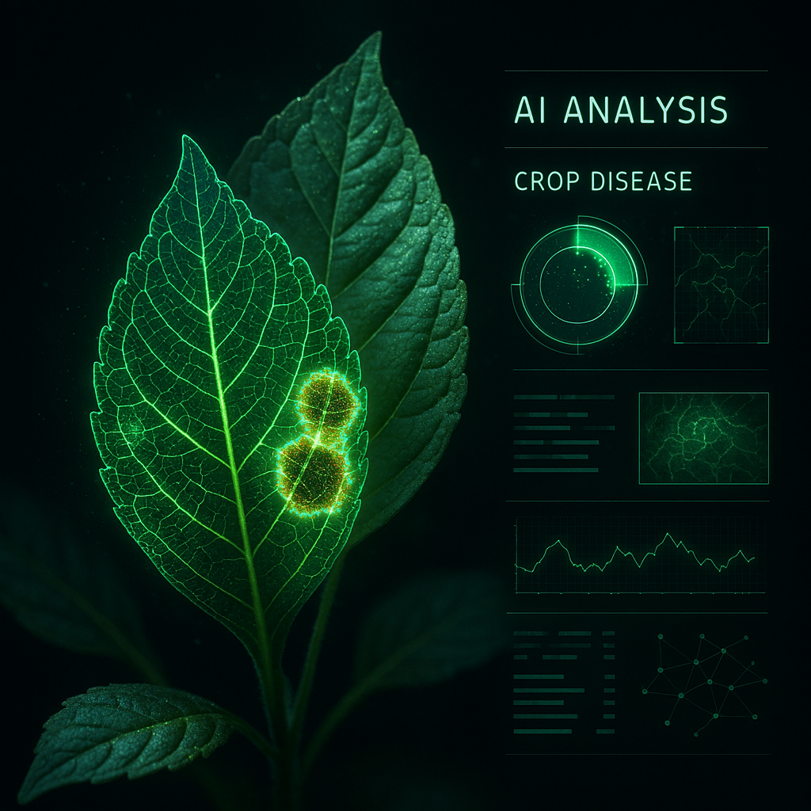

Instant Diagnosis
Snap a photo and get an AI diagnosis in under 5 seconds.
AI-powered plant disease detection for growers, farmers, and botanists.
Snap a photo and get an AI diagnosis in under 5 seconds.
Personalized care guides tailored to your crop and climate.
Track outbreaks across your farm with live dashboards.
One image triggers the full pipeline: detect the disease, reason about it, and ground every answer in trusted agronomy.
A grower photographs an affected leaf and uploads it. No install needed, and it works in any phone browser.
A ResNet18 transfer-learning model classifies the leaf across 38 disease classes with calibrated confidence.
The agent works through severity, treatment, and economic impact, citing Microsoft Foundry IQ sources.

Upload a crop leaf and the vision model plus reasoning agent run right here, returning a diagnosis, severity, treatment, economic exposure, and cited sources.
Your diagnosis and the agent's reasoning will appear here.
Start it locally, then reload this page:
python api.py
Serves the full app at http://127.0.0.1:8000.
Every diagnosis you run is saved locally in your browser. Track outbreaks and dollar exposure across your field over time.
Detect, reason, and act on a single leaf photo.
Start Free Scan